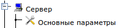
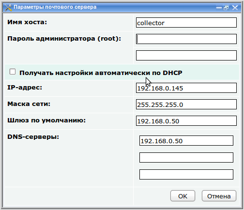
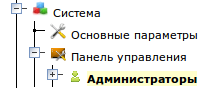
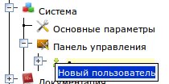
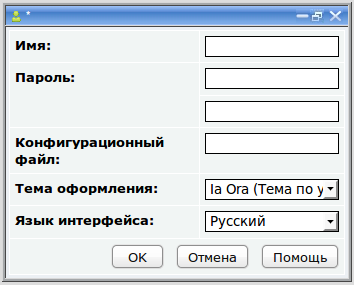
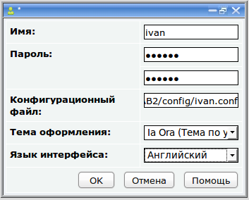
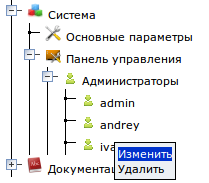
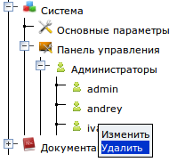
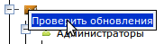

Настройка системы
Основные параметры сервера
Основные настройки сервера находятся в разделе . Щелкните левой кнопкой мыши по разделу "Основные параметры", появится окно основных параметров системы:

- Имя хоста - имя почтового сервера. (Значение по умолчанию: collector).
- Пароль администратора сервера (root) - пароль
учетной записи пользователя root. Этот пользователь имеет полный доступ
ко всем ресурсам сервера, на него не распространяются правила,
ограничивающие доступ к общим папкам. Этот пользователь может удаленно подключаться к серверу в
режиме удаленного рабочего стола и в режиме командной строки. Его
пароль нужно указать дважды (значение по умолчанию: 111111)
- Параметры подключения к сети - стандартный набор параметров подключения сервера к сети:
- IP-адрес - Должен быть уникален в данной сети. (значение по умолчанию: 192.168.0.100)
- Маска сети - Должна быть такой же, как и у других узлов данной сети (значение по умолчанию: 255.255.255.0)
- Шлюз по умолчанию -
адрес узла, через который локальная сеть подключается к Интернет. Если
сервер не должен быть подключен к Интернет, оставьте это поле
пустым (значение по умолчанию: 192.168.0.50)
- Серверы DNS
- серверы,
преобразующие доменные имена Интернет-сайтов в IP-адреса и обратно.
Обычно их можно найти в договоре с провайдером. Если не помните, можете
оставить значение по умолчанию, это общедоступный DNS-сервер компании
Google, который отлично работает, и в основном даже лучше чем
DNS-серверы многих провайдеров. (Значение по умолчанию: 8.8.8.8). Если
в Вашей сети есть DNS-сервер, укажите его в качестве одного из серверов.
Можно получать параметры сети с DHCP-сервера, если включить флажок "Получать настройки автоматически по DHCP".
После ввода параметров нажмите "OK" и изменения моментально вступят в силу.
Панель управления
Этот раздел включает подраздел "Администраторы", который позволяет
изменять существующие учетные записи администраторов панели управления
сервером, а также создавать новые. Изначально заведена одна учетная
запись администратора: admin с паролем 111111, от имени которой
происходит подключение к панели управления в первый раз. Рекомендуется
как можно быстрее изменить пароль администратора.
Также с помощью этого раздела выполняется обновление системы через Интернет.
Создание новой учетной записи администратора
1. Разверните раздел "Панель управления", появится группа "Администраторы"

2. Нажмите правой кнопкой мыши на группе "Администраторы" и выполните команду "Новый пользователь" из контекстного меню

3. Появится окно для ввода данных учетной записи нового администратора

4. Требуется ввести "Имя" администратора, его "Пароль" дважды и "Конфигурационный файл".
- Имя должно содержать только английские символы
- Пароль может содержать любые символы.
- И имя и пароль чувствительны к регистру, например, "admin" и "Admin" считаются разными пользователями
- Конфигурационный файл используется системой для создания профиля
пользователя для Панели управления. Нужно ввести путь к нему
относительно корневого каталога панели управления. Вводится в следующем
формате: /etc/WAB2/config/<имя>.conf.
Также можно выбрать из списка тему
оформления и язык интерфейса панели управления. Тема оформления определяет цветовую гамму
и другие элементы дизайна панели управления.
Увидеть новую тему можно будет при
следующем входе в панель управления от имени этого пользователя.
Также, если изменить "язык интерфейса", то он изменится при следующем
входе в панель управления или при перезагрузке страницы в браузере.
Например настройка учетной записи администратора ivan может выглядеть так:

5. После завершения редактирования нажмите "OK". Новая учетная запись
появится в группе "Администраторы". При следующем запуске панели
управления, можно входить от имени этой новой учетной записи.
Изменение параметров учетной записи администратора
Можно изменить имя и пароль любого, уже заведенного администратора. Существует два способа:
1. Разверните группу "Администраторы" и щелкните левой кнопкой мыши по
нужной учетной записи. Появится окно с данными учетной записи, такое
же, как показано на прошлом изображении. Отредактируйте данные и
нажмите "OK".
2. Разверните группу "Администраторы", щелкните правой кнопкой мыши по
нужной учетной записи и выполните команду "Изменить" из контекстного
меню:

Появится окно с данными учетной записи, такое же, как показано на прошлом изображении. Отредактируйте данные и нажмите "OK".
Удаление учетной записи администратора
1. Разверните группу "Администраторы"
2. Нажмите правой кнопкой мыши на учетной записи администратора, которую хотите удалить
3. Выполните команду "Удалить" из контекстного меню

4. Система спросит: "Вы действительно хотите удалить пользователя ?". Если не передумали, ответьте "Да".
Обновление системы
Панель управления сервером это конфигурация, созданная компанией ЛВА с помощью платформы "ЛВА Конструктор Web-приложений 2".
На момент приобретения, на сервере установлена самая новая исполняющая
среда платформы "ЛВА Конструктор Web-приложений 2" и самая новая
конфигурация панели управления сервера Mystix Collector MX.
Однако специалисты компании постоянно
совершенствуют и саму платформу и конфигурации, созданные на ее основе
и выпускают пакеты обновлений. При выходе очередного обновления,
компания ЛВА делает почтовую рассылку всем пользователям решений на
базе платформы "ЛВА Конструктор Web-приложений 2". В рассылке приведен
список того, что обновилось в системе. В этом списке может быть
описание новых функций, появившихся в системе, либо описание
исправленных ошибок.
Чтобы обновить свою панель управления
до самой новой версии нужно чтобы сервер был подключен к Интернет.
Чтобы выполнить обновление нужно:
1. Войти в Панель управления
2. Развернуть раздел "Сервер"
3. Нажать правой кнопкой мыши на разделе "Панель управления" и выполнить команду "Проверить обновления" из контекстного меню.

4. Система покажет окно "Будет выполнена проверка наличия обновлений ..."
5. После нажатия на кнопку "OK" система проверит, есть ли на сервере ЛВА обновления и если есть, предложит установить их, отобразив диалоговое окно "Появилась новая версия системы. Обновить сейчас ?". Если же новых версий не обнаружено, то появится окно "Система находится в актуальном состоянии".
6. Если обновления появились и
система получила утвердительный ответ на вопрос "Обновить сейчас ?", то
будет выполнено сравнение версии панели управления и платформы,
установленных на сервере с версиями, доступными для обновления. После
этого система загрузит и установит все необходимые обновления в
правильной последовательности.
7. После того как обновление
выполнится, система перезагрузит панель управления в браузере. Номер
версии в заголовке в окне браузера должен измениться.
При загрузке обновления из Интернет
могут возникнуть различные проблемы, о чем система обязательно сообщит.
При возникновении проблем нужно проверить соединение сервера с Интернет
и повторить операцию еще раз.
Компания ЛВА призывает всех пользователей решений на базе "ЛВА Конструктор Web-приложений 2" писать по адресу
info@lvacompany.ru
о всех недочетах и ошибках, обнаруженных в процессе работы с Панелью
управления, а также любые пожелания, связанные с панелью управления
(какие еще возможности хотелось бы иметь и как хотелось бы улучшить
существующие возможности).
Эта информация помогает нам двигаться в правильном направлении при выпуске обновлений.